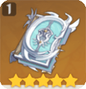
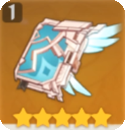
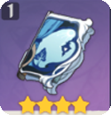
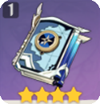

| Weapon | Details | |
|---|---|---|
|

Lost Prayer To The Sacred Winds |
Increases Movement SPD by 10%. When in battle, gain an 8% Elemental DMG Bonus every 4s. Max 4 stacks. Lasts until the character falls or leaves combat. | |
| Weapon Substitute | ||
|

Skyward Atlas |
Increases Elemental DMG Bonus by 12%. Normal Attack hits have a 50% chance to earn the favor of the clouds which actively seek out nearby enemies to attack for 15s. Dealing 160% ATK DMG. Can only occur once every 30s. | |
|

The Widsith | When the character takes the field, they will gain a random theme song for 10s. This can only occur once every 30s. Recitative: ATK is increased by 60%, Aria: Increases all Elemental DMG by 48%. Interlude: Elemental Mastery is increased by 240. | |
|
Solar Pearl | Normal Attack hits increase Elemental Skill and Elemental Burst DMG by 20% for 6s. Likewise, Elemental Skill or Elemental Burst hits increase Normal Attack DMG by 20% for 6s. | |
|

Mappa Mare | Triggering an elemental reaction grants an 8% Elemental DMG bonus for 10s. Max 2 stacks. | |